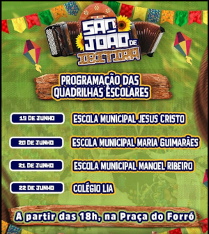

Ibitira Bahia
Está entre os maiores São João da Região aqui no distrito de Ibitira Bahia, com uma tradição cultura que existe a muitos anos. O filhos que residem fora, sempre buscam reecontrar a família e amigos nessa época, para que juntos possam festejar e matar a saudade desta terra querida que é a nossa Ibitira. Pessoas de cidades circo vizinhas particpam com grande fevor todos os anos, abrilhantando ainda mais a história que a região carrega durante muitos anos.
Um fervor passado de geração em geração, com apresentações e quadrilhas juninas das escolas situadas no distrito, onde shows com os filhos da própria terra se apresentam e trazem alegria e mais dias de festa para a população que ali residem.
